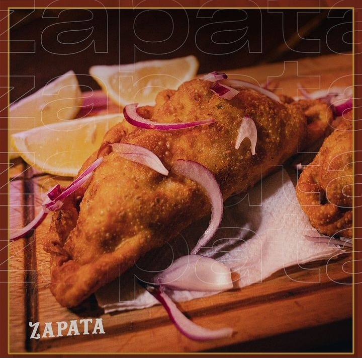
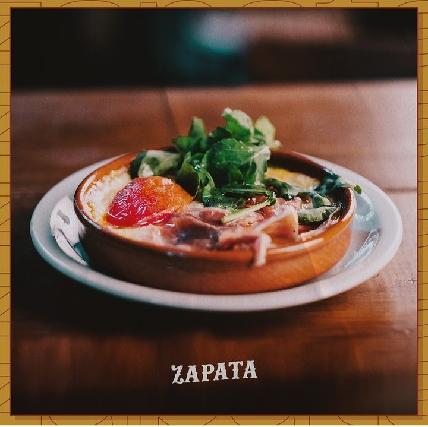
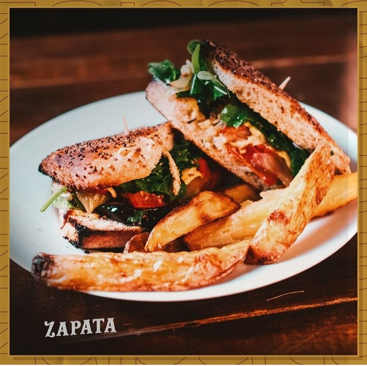

Nuestra Carta
Tapas y Bocatas

-
Mortadela
-
Queso Macerado
-
Escabeche de la Casa
-
Triolet (contiene las 3 tapas simples)

-
Empanada Zapata (Brazuelo en coccion larga, champignon y roquefort)
-
Chorizo a la sidra
-
Croquetas de espinaca (con mousse de palta)
-
Croquetas ibericas (con jamon crudo)
-
Papas Bravas
-
Pollo Crujiente (con salsa barbacoa)
-
Provoleta Zapata (con jamon crudo, tomates cherry confitados y rucula fresca)
-
Pinchos de Bondiola (bondiola y panceta en salsa de mostaza dijon)
-
Pinchos de lomo (lomo y panceta macerado en aceto balsamico y salsa alioli)
-
Rabas con alioli
-
Tortilla de papas (con mermelada de tomates, albahaca fresca y salsa alioli)

-
Jamon crudo (jamon crudo, tomates secos, rucula y parmesano)
-
Calamar (calamares, cebolla morada y salsa alioli)
-
Vegetariano (berenjena crispy, tomate fresco, cebolla morada y mousse de palta)
-
Bondiola (bondiola braseada, mozzarella, cebolla caramelizada y salsa barbacoa con camotes fritos)
-
Ternera (ternera braseada, mozzarella, pimiento a la chapa macerado al romero y cebollas crispy con
papas rusticas)
Postres
Consultar al camarero por las opciones disponibles